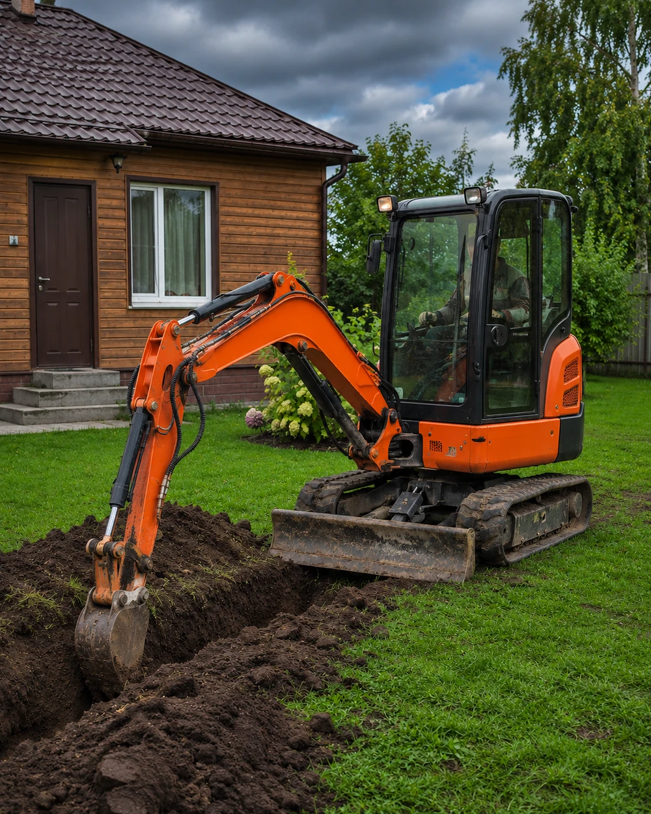

Земляные работы
Копка траншей
Копаем траншеи под дренаж и коммуникации. Для оценки нужны длина, ширина и глубина, а также место для вынутого грунта.

Земляные работы
Копаем траншеи под дренаж и коммуникации. Для оценки нужны длина, ширина и глубина, а также место для вынутого грунта.
Копаем траншеи под дренаж и коммуникации. Для оценки нужны длина, ширина и глубина, а также место для вынутого грунта.
→Для локальной выемки, планировки и других задач опишите участок. Возможность выполнения и объём работ уточняются отдельно.
→Убираем ил и наносы из существующей канавы, чтобы восстановить сток воды. До выезда уточним длину канавы и доступ к берегу.
→Снимаем грунт с бугров и заполняем понижения. Для оценки нужны площадь, перепад высот и желаемый уклон.
→Для установки уточним количество, длину и диаметр свай, а также подъезд к точкам монтажа. Наличие сваекрута и стоимость согласуем отдельно.
→